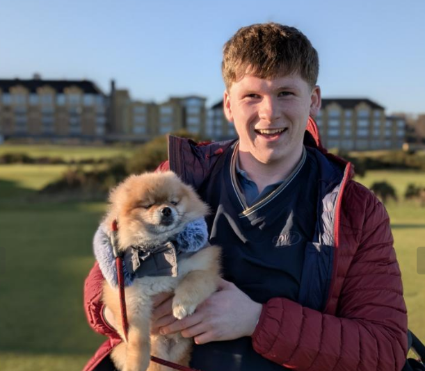
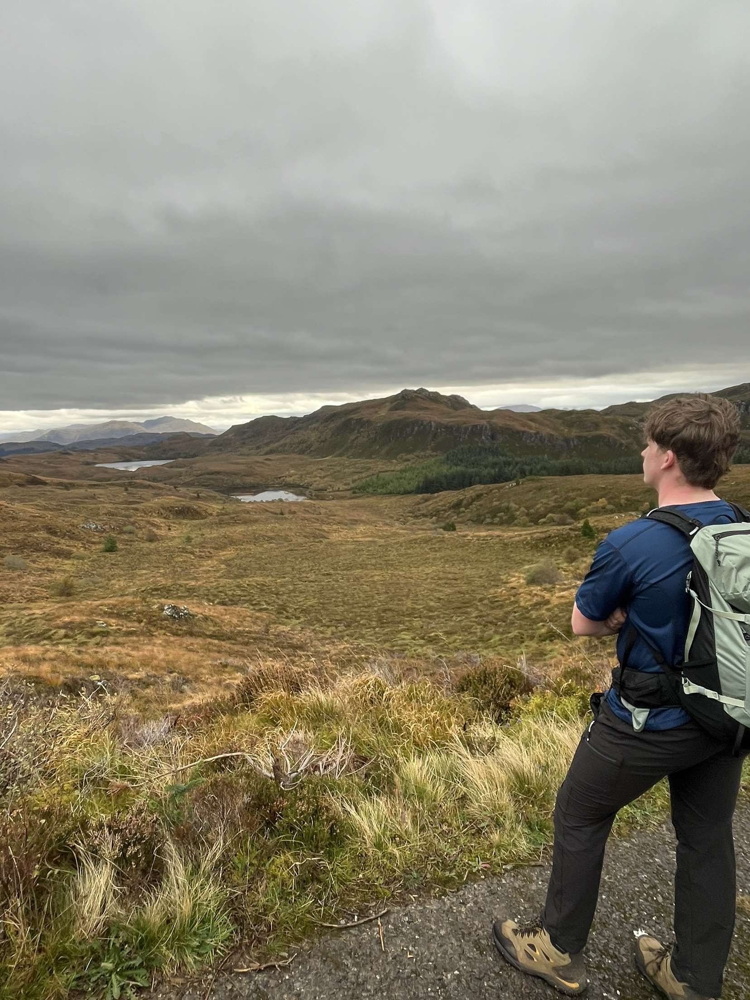

Background
I'm Archie — a fourth-year Economics student at St. Andrews with a genuine interest in finance and a habit of spending weekends either on a golf course or halfway up a hill. I grew up in Aberdeen, which probably explains both.
Academically I'm drawn to the quantitative side of economics — statistics, financial mathematics, the kind of problems where the answer isn't obvious until you work through it properly. Outside of that, I try to stay active, stay curious, and make the most of being in one of the best parts of Scotland.
Life Outside Work

Golf
Hard not to get into golf when you study at St. Andrews. It's become a proper part of my routine — a good round has a way of clearing your head that not much else does. There's also something about the patience and focus it demands that I find genuinely useful elsewhere.

Hillwalking
I joined St. Andrews Breakaway Hillwalking Society and I'm taking on the role of Trip Secretary next year. I really enjoy being apart of Breakaway, as I am able to meet loads of interesting people and see so much of Scotland.